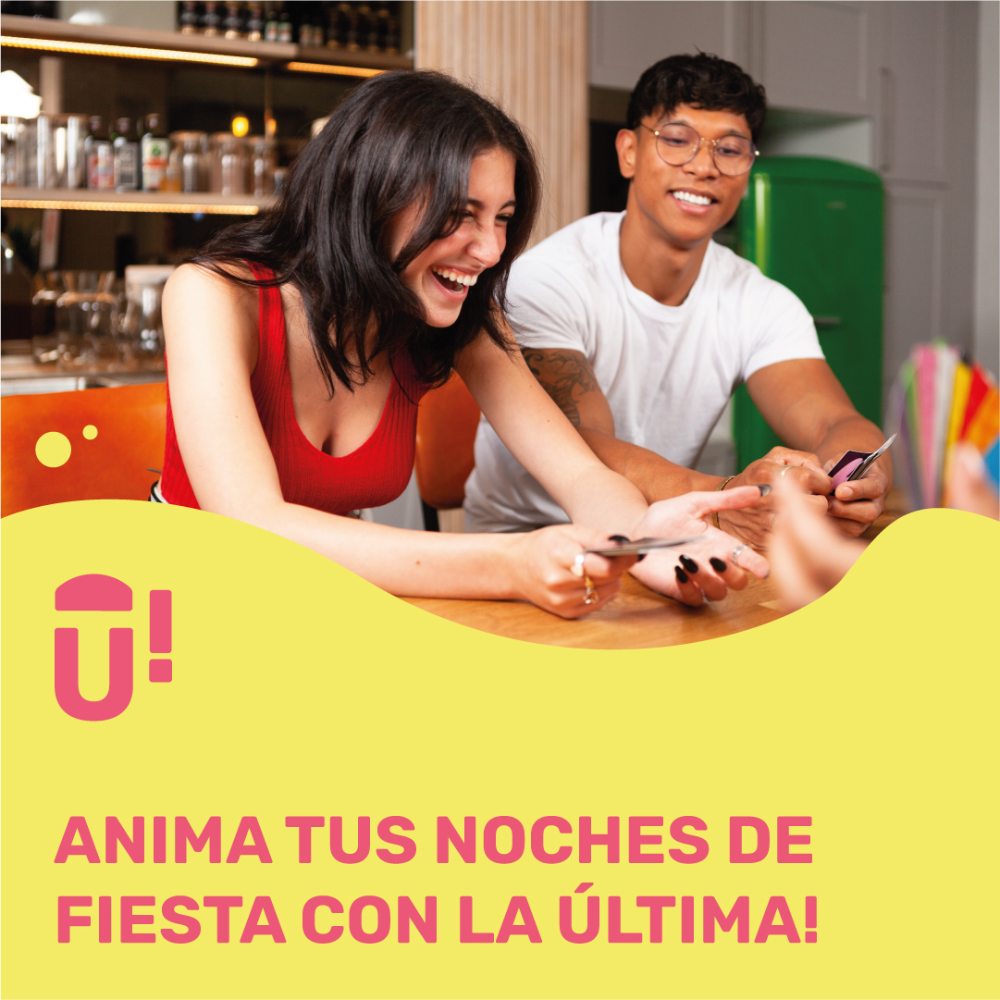
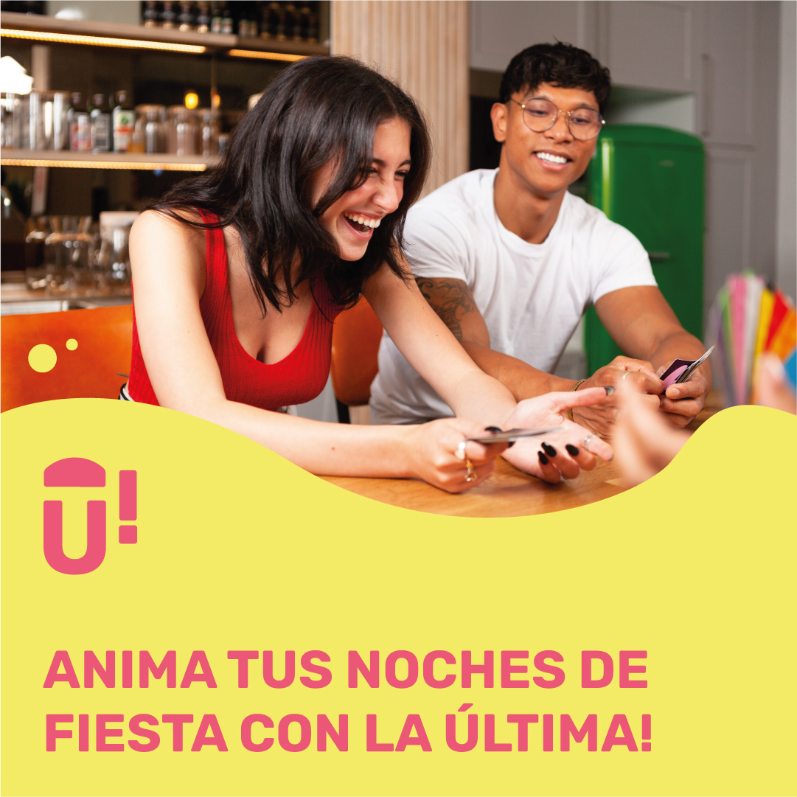

APLICACIONES!
CARTELERÍA
Los carteles tienen 3 variaciones. Se decidió crear esta variedad ya que así se ajustaban mejor a los mensajes de la marca.
La primera opción utilizaría imágenes divertidas de personas junto con un texto corto que aludiera a la marca, utilizando los colores y formas de la misma. Siempre sugiriendo el mensaje sin ser directos ya que podría dar lugar a malentendidos ya que tratan el tema del aclohol. También, de esta forma, se genera un halo de misterio que invita a invetigar más sobre qué es.
La segunda opción utiliza también imágenes pero de bebidas camufladas mediante frutas. Sigue la misma forma que la primera ocpión con una frase y colores de la marca. Es también una forma de suguerir utilizar otro tipo de bebida que noo fuera el alcohol para aquellos que no pueden o prefieren no beber.
En la tercera opción se mostraría ya el producto a vender junto con los elementos estilísticos de la marca. Se seguirían las mismas indicaciones que en las anteriores.


APLICACIONES!
MATERIAL OFFLINE
Dentro del material offline se encuentran los juegos e instrucciones que se imprimirían, incluyendo un manifiesto de la marca a modo de carta de bienvenida.
Cada uno de los juegos tendría un diseño ajustado a su función y temática pero siempre utilizando elementos de la marca que ayuden a diferenciarlos de los de la competencia y a identificarlos como propios de la marca.
APLICACIONES!
REDES SOCIALES
Es importante tener muy presente el uso de las redes sociales, ya que el target de la marca son los jóvenes quienes se mueven constantemente por estas plataformas.
El objetivo es que cualquier usuario se sintiera dentro de la comunidad siendo ellos los protagonistas contando sus historias y anécdotas jugando los juegos. Esto se consiguió utilizando hashtags que pudieran utilizar, creando también torneos y sorteos en las redes.
Para el feed se usarán las imágenes e ilustracioes de la marca.
PUBLICACIONES
En ellas aparecerán imagenes e ilustraciones de la marca y también vios y carruseles promocionales que den información sobre un nuevo juego.
 

STORIES
Para los Stories se usarán videos animados, fotos de juegos y fotos que nos manden los usuarios con el hashtag adecuado.